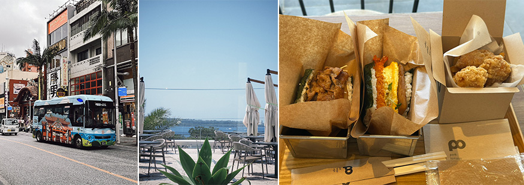
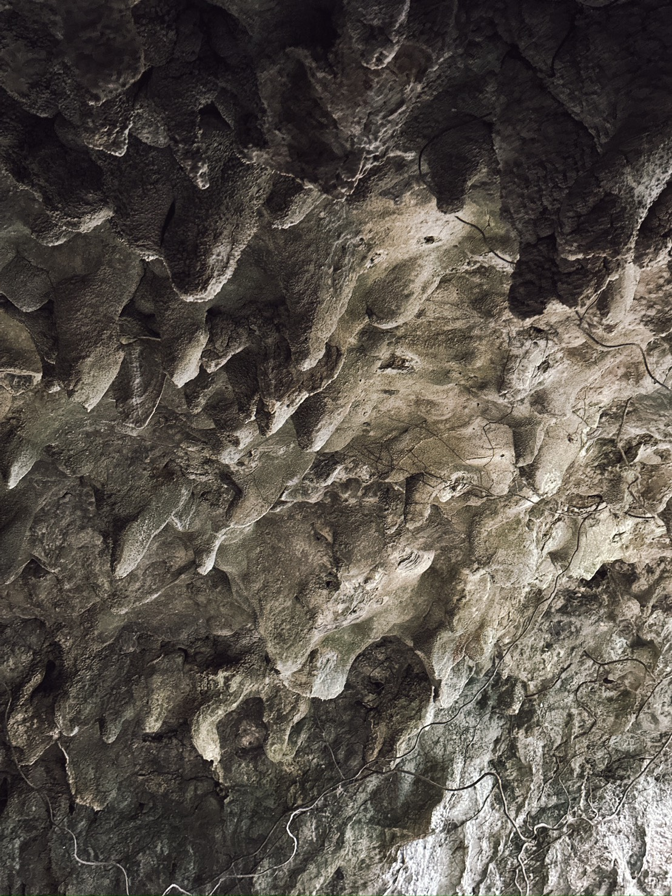
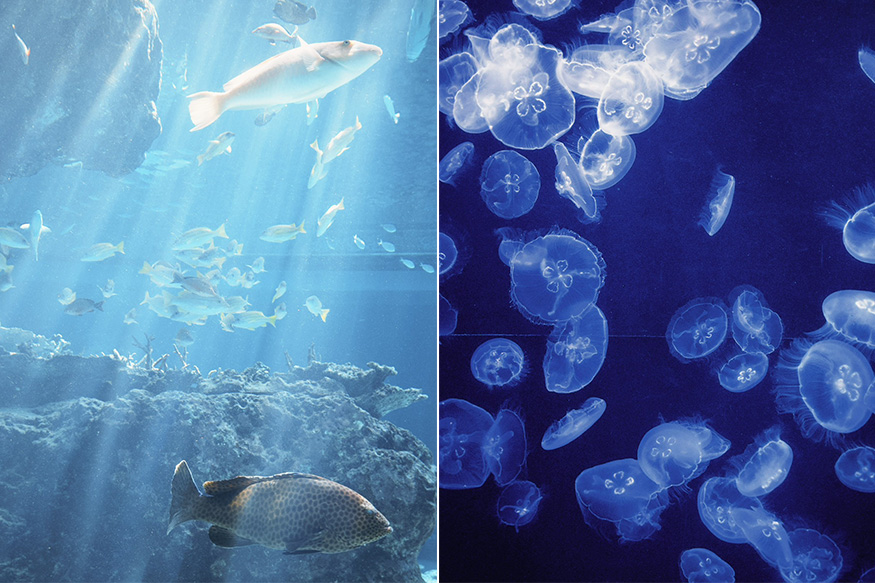
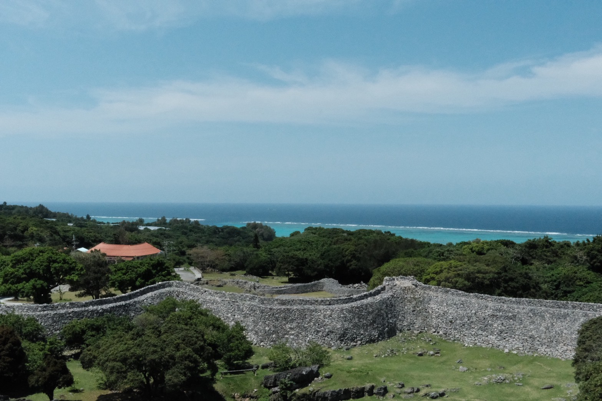

當飛機降落那霸時，窗外的海比任何一張照片都要藍。不是顏色更飽和，是質地不同，像是被光從裡面打亮。直到取車、上路，方向盤握在手裡時，才慢慢進入沖繩的節奏。
在第一站選擇最傳統的小吃—「沖繩麵」是這裡的日常。湯頭用豬骨與柴魚慢熬，鮮味乾淨、不搶戲，上面的滷肉軟到覺得對方在體諒你，將肉和湯混合在一起入口時，覺得這個島嶼對食物的態度跟它對時間的態度是一樣的。
認真，但不追求速度。
 |
港川外人住宅區以前是美軍宿舍，路牌和路名都有濃濃的美式風格。走進 FLORIDA STREET，比起景色更先感受到的是咖啡香。被遺棄的空間在時間的薰陶下配著咖啡更有滋味，其中美式風格最濃厚的是古著店。店家秉持著將復古元素融入日常生活的理念，販售豐富的美國古著、小物和雜貨，亦或是美軍在先前時代所遺留的軍裝、軍品也被改造成極具風格的選品。
Gangala 鐘乳石洞雖然不如玉泉洞有名，但它的入口絕對可以給人很大的震撼。雖然報名方式有點麻煩，除了線上用日文網頁預約外，只能用電話預約。這點對外國人來說，實在是有些麻煩。除此之外，因為 Gangala 鐘乳石洞是以發現原始人遺跡為主打，因此紀念品也十分有趣，是以原始人的胸毛為主題命名的野菜，想必收到的人應該會哭笑不得。Gangala 鐘乳石洞的原始景觀讓人有不身處於現代的錯覺，一踏入石洞彷彿回到數十萬年前，踩著與原始人一樣的道路，似乎也在過程中看到一樣的風景。
 |
A&W 是沖繩特有的自有品牌，它的漢堡比常見的品牌更有美式風味。Root Beer 用霜凍杯端上來，泡沫很厚，喝第一口有種說不清楚的親切感，如果在台灣，我一定覺得它是沙士。這個品牌在其他地方早已消失，也許正因為沖繩人悠閒的步調，不太急著讓東西消失，才留下這特別的風味。
美麗海水族館的大水槽，鯨鯊和魟魚在同一片水域游著，誰也不干擾誰。我站在玻璃前不想移動。不是因為震撼，是因為那個畫面有一種讓人很想繼續看下去的感覺，初夏的陽光照在水槽裡，感覺不像實境，像是站在夢裡，像是某種你說不清楚但確實的存在。
 |
今歸仁城跡的石牆以琉球灰岩堆砌，不用灰泥，靠的是石頭與石頭之間的重力和默契。十五世紀廢棄至今。爬上去時，海風很大，視野廣闊到讓人忘記說話。我不太懂琉球的歷史，但只要站在那裡，就能感受到時間。
 |
晚上的琉球海炎季是旅程最意外的時刻。沙灘上的煙火搭配著音樂節奏出現、再消失。與之不同的是，那天的雲很淡、風很涼、煙花燦爛。如果再讓我來到沖繩，坐在海邊看煙火肯定是我的行程首選。